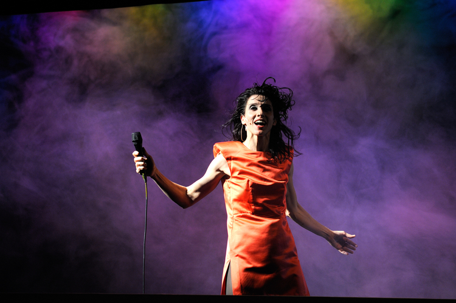
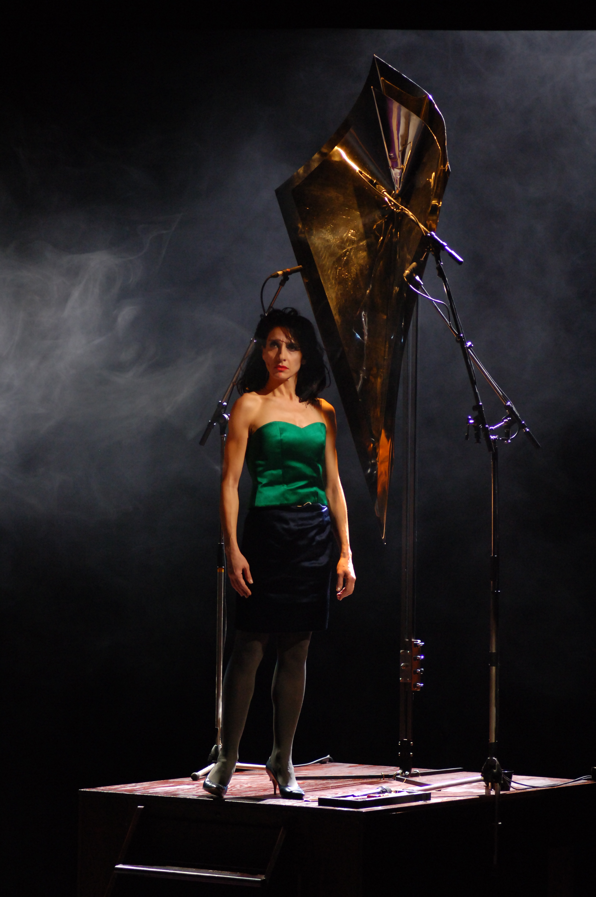
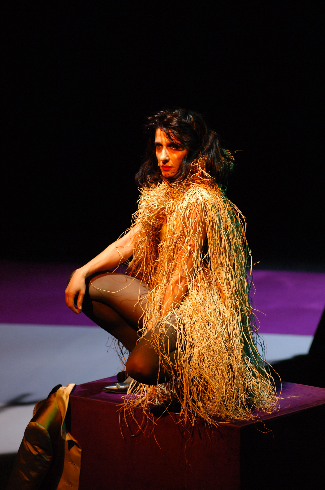
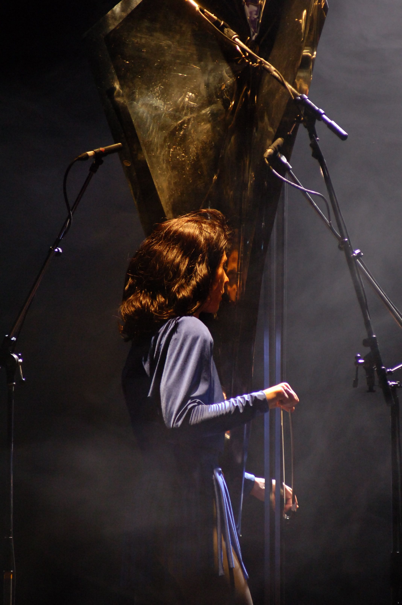
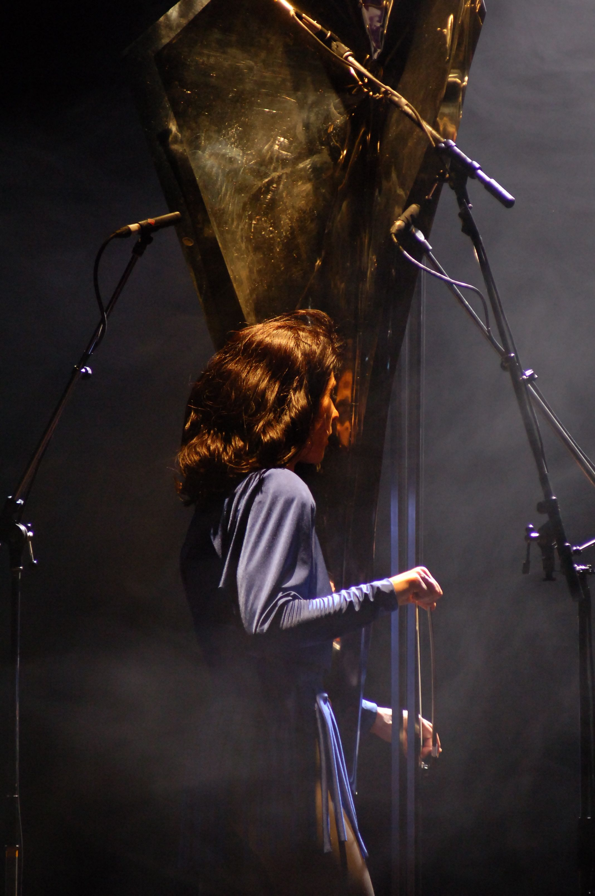
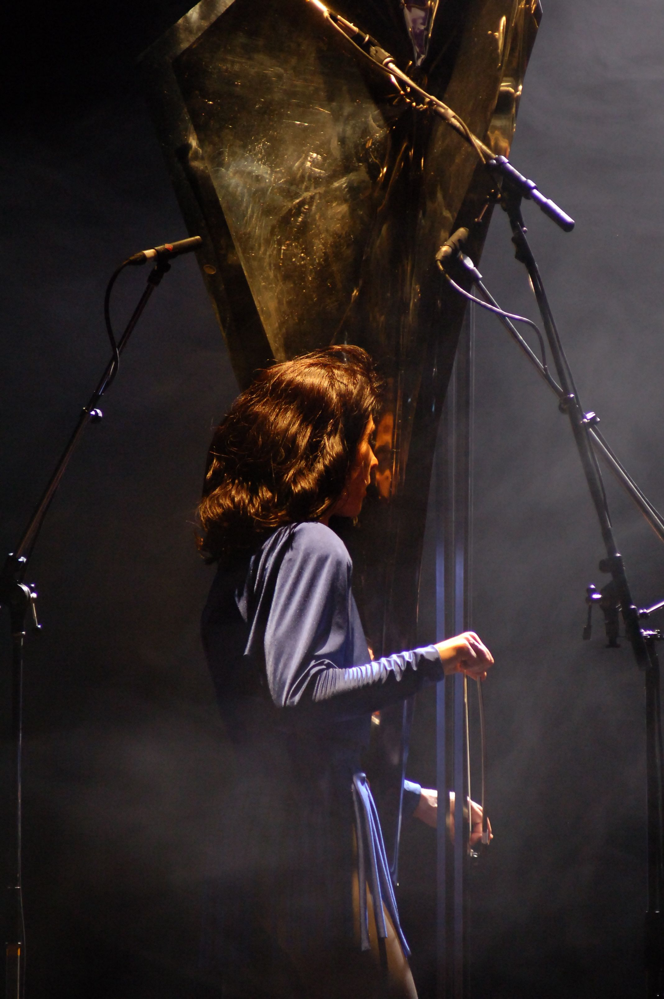

 



←
→

«Elle menait sa bastonne. Je me voyais déjà none en suppliant la douleur de mon maudit malfaiteur. Matraque !».
«Les fleurs d’Anne-marie, l’écume de mer, braise d’hiver, givre, quand le masque tombe, autre étude sur
l’inquiétude, huile sur toile marouflée…».
«Les fleurs d’Anne-marie, l’écume de mer, braise d’hiver, givre, quand le masque tombe, autre étude sur
l’inquiétude, huile sur toile marouflée…»
Extrait de chansons de la pièce.
C’est mon dernier solo, même si cela n’a jamais été le cas…Une pensée qui aime se confronter et rencontrer de grands inconnus de personnalités avec lesquelles pouvoir expérimenter des choses jamais faites qui ne nous bouleverserons peut-être pas mais ouvrirons des brèches où tous les sentiments sont permis et leurs satisfactions aussi.
Une sculpture sonore des frères Baschet conçu dans les années 60, un glass harp, de l’orgue, un ordinateur pour donner à la musique une vision aussi bien performative que composée et des instruments que je ressens comme privés du pouvoir, du savoir. Mais conçus pour donner une libre expression à la subjectivité. Une réflexion autour du désir d’agressivité, d’amour et de pardon. Triptyque à confrontation inépuisable. «C’est ma fin, une belle fin, envoûtée par l’odeur qui hante celle du sexe inavoué d’une anarchie bourgeoise au délice des salons rustiques. Que la pierre puisse se marier aux poils, je le veux, je l’exige». En hommage au désir qui joue de mauvais tours et nous invite à la vie. Dernier rythme de mes soucis mentaux, court rendez-vous qui nous voit au dégoût et nous reconstruit.
Claudia Triozzi
Conception générale, interprétation et scénographie Claudia Triozzi
Texte / voix Claudia Triozzi
Création musicale Claudia Triozzi et Fernando
Villanueva
Tôle à voix « sculpture des frères Baschet »
Orgue Ann Dominique
Merlet
Glass Harp Roberto Tiso
Son Félix Perdreau
Régie
générale Sylvain Labrosse
Création lumière Yannick Fouassier
Regard
autour d’un mouvement dansé Rémy Héritier
Réalisation costumes Jutta
Klingel
Réalisation marionnette Thierry Evrard
Réalisation décor François
Maréchal et Louis Broothaers.
Remerciements à Nadia Fartas et Nicola Spinetto – 5+1AA
(architecte).
Production Association DAM-
CESPI
Coproduction Centre Pompidou – Paris; Culturgest- Lisbonne ; Le Phénix scène nationale
– Valenciennes; Kunstenfestival des Arts- Bruxelles ; Centre National de Danse Contemporaine d’Angers ;
Marseille Objectif Danse et avec l’aide à la production d’ Arcadi
Les partenaires Avec le soutien
de la Direction régionale des affaires culturelles d’Ile-de-France-Ministère de la Culture et de la
Communication et le soutien du Conseil Général de Seine Saint Denis
Remerciements Centre
Chorégraphique National de Franche Comté – Belfort ; Théâtre de la Cité Internationale, Paris.